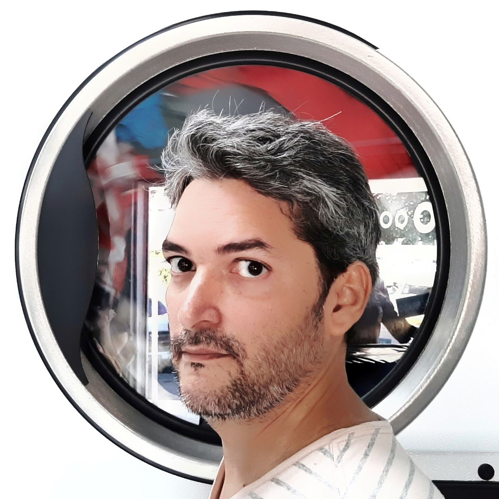
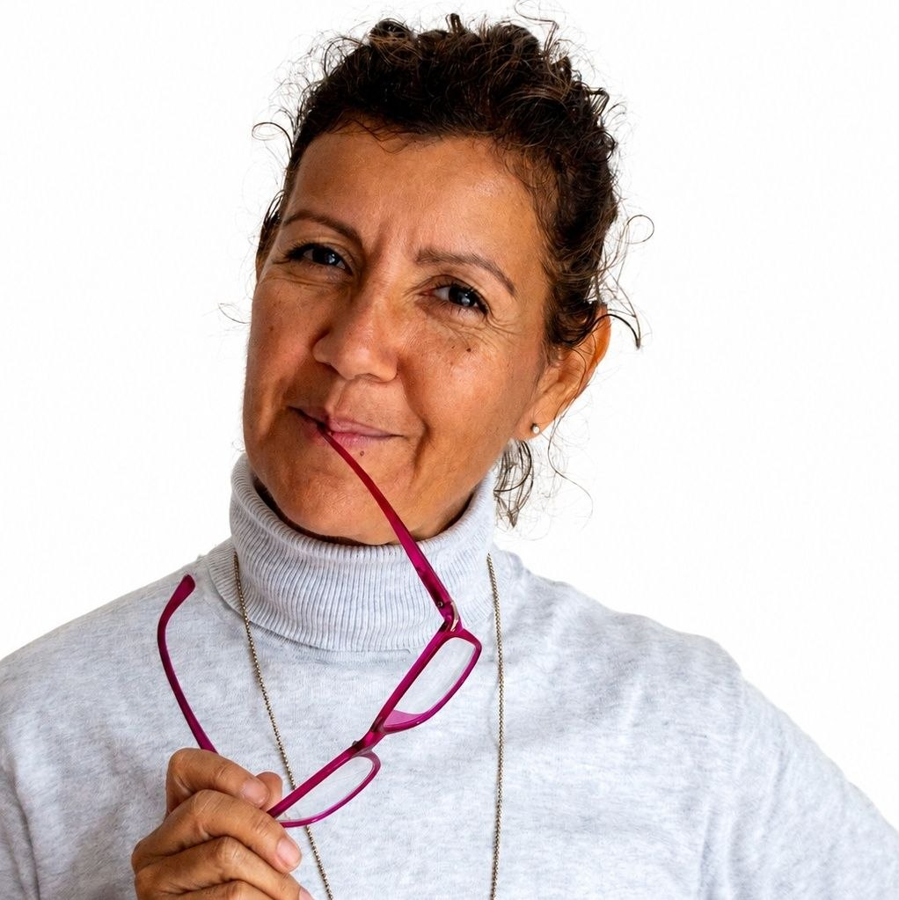
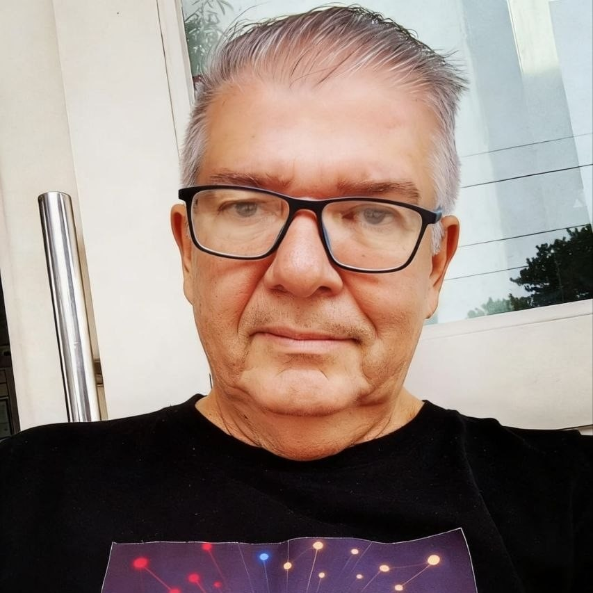
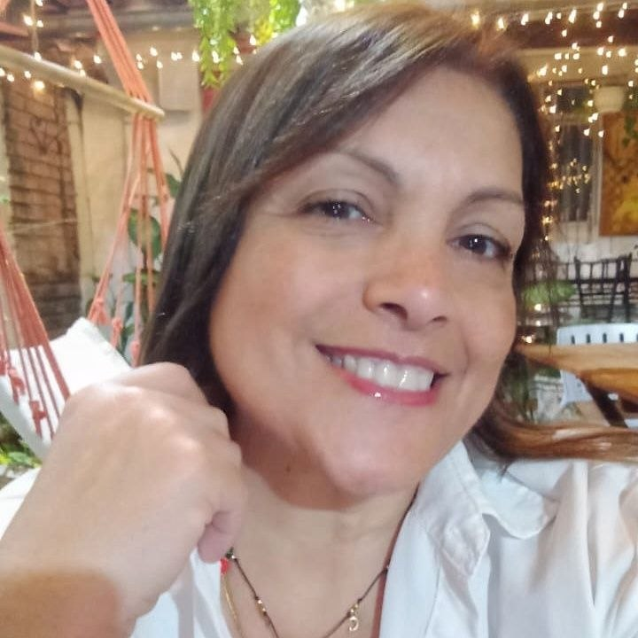

Archivo
Temporadas
Todos los episodios, ordenados por temporada.


Un podcast hecho desde Santa Cruz de la Sierra, Bolivia. Un puente entre la comunidad venezolana migrante y la boliviana: historias de reinvención, humor, psicología del migrante y cultura compartida.
Ahora mismo
El quinto episodio de la primera temporada. Conversaciones reales sobre lo que significa construir una vida nueva, con la resiliencia y el buen humor que nos caracterizan. Una hora de compañía para quienes van por el camino largo.
Ver en YouTubeArchivo
Todos los episodios, ordenados por temporada.
Historias reales
Venezolanos que rehacen su vida en Bolivia. Cada historia, una lección.

Salió forzada por una enfermedad crónica que Venezuela ya no podía tratar. En Chile, el Estado cubre sus 14–17 medicamentos diarios. Ha trabajado desde call center hasta auxiliar de aseo; hoy lleva 8 años construyendo vida con resiliencia y sin perder su "naranja" venezolano.
¿Te gustaría contarnos tu historia? Contáctanos aquí

Cocinero de alma que llegó con trabajo asegurado y se quedó por amor —a Bolivia y a su novia boliviana. Casi ocho años sin un día sin trabajar. Hoy vende en el mercado de Los Pozos: si preguntan por el venezolano Ender, todo el mundo sabe dónde está.
¿Te gustaría contarnos tu historia? Contáctanos aquí

Arquitecta y proyectista. Hoy trabaja como asesora inmobiliaria en Century 21, aplicando su ojo arquitectónico para evaluar propiedades.
¿Te gustaría contarnos tu historia? Contáctanos aquí

Piloto comercial que llegó por amor. Empezó vendiendo mini-lunch en bicicleta, recorriendo 12 km diarios desde un cuarto de 6×4. Hoy es dueño de Guayoyo SCZ, cafetería con alma andina.
¿Te gustaría contarnos tu historia? Contáctanos aquí

Barbero y sommelier. Se certificó como sommelier alternando con su trabajo en la barbería. Valora la gastronomía local, la cercanía de la ciudad y la cultura del churrasco cruceño.
¿Te gustaría contarnos tu historia? Contáctanos aquí

Llegó con su hermano y una prima, sus padres ya estaban aquí. Un embarazo complicado definió su permanencia. Hoy estudia cosmetología y maderoterapia. Llama al emprendimiento una "bonita revolución humana".
¿Te gustaría contarnos tu historia? Contáctanos aquí

Periodista y redactora creativa. Esperó graduarse de Comunicación Social antes de partir. Hoy trabaja en publicidad. Su mensaje: está bien sentirse mal, pero el peor día solo dura 24 horas.
¿Te gustaría contarnos tu historia? Contáctanos aquí

Llegó sola siguiendo el consejo de un vecino. Ha limpiado oficinas y aprendido que aquí se vende de todo. Hoy emprende en tecnología. Su consejo: no comparar países; agradecer y adaptarse.
¿Te gustaría contarnos tu historia? Contáctanos aquí
Detrás del micrófono
Venezolanos y venezolanas que encontraron en Bolivia un lugar y en el podcast una forma de tender puentes.

Fundador de Statetty y ekvilibroLab. Ingeniero de software con más de 25 años en transformación digital en Venezuela y Bolivia. Pensamiento sistémico, ejecución creativa.

Venezolana, arquitecta y migrante. Convencida de que tejer puentes entre realidades distintas demuestra que la empatía y el diálogo son una vía segura para la transformación social.

Venezolano, abuelo de tres, padre de dos y compañero de Naty. Cocina sabroso, aunque reconoce que cerca del mar sería mejor.

Psicopedagoga venezolana. Aporta la mirada profesional sobre el proceso migratorio, el duelo y la adaptación. Acompañante del equipo y de la audiencia.
Seguinos
El programa está en todas las plataformas. Elegí la tuya.
Comunidad
Un directorio colaborativo de venezolanos en Bolivia que ofrecen servicios y productos. Si tenés algo para ofrecer a la comunidad, o necesitás encontrar a alguien de confianza, este es tu espacio.
¿Preguntas? Escribinos a somos10e7@gmail.com
Completá el formulario y formá parte de la red de servicios de la comunidad venezolana en Bolivia. Es fácil, rápido y gratuito.
Registrarme en Páginas BlancasEl formulario se abre en Google Forms